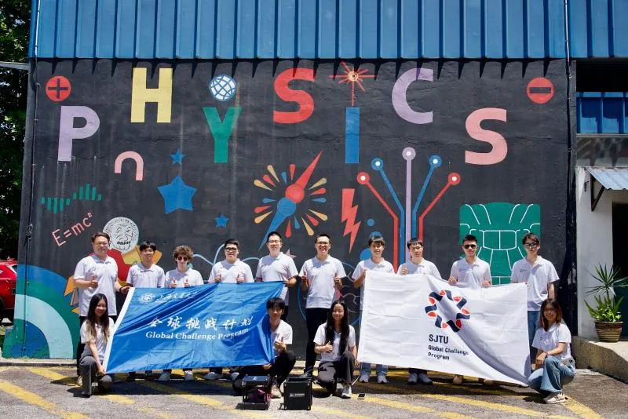
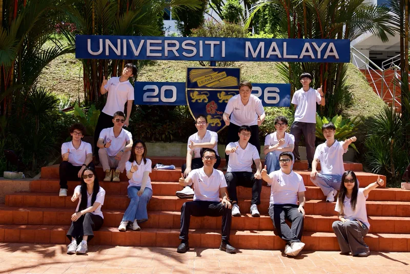

On 7 August, the team visited the Department of Physics at Universiti Malaya (UM), Malaysia’s leading research university, with strengths in computational and particle physics. Senior lecturer Norhasliza Yusof, Prof. Zamri Zainal Abidin, Siew Yan Hoh — associate professor at XMUM and a former TDLI postdoc in our group — and officials from Kuala Lumpur City Hall (DBKL) and Prasarana joined the exchange.




The morning workshop included SJTU talks, a round-table and a detector demonstration. Norhasliza Yusof introduced the department, and Prof. Zamri welcomed the team. Kim Siang Khaw spoke about the history of muon physics, the SJTU muon group and the Global Challenge Program. Guan Ming Wong and Qee Enn Tai demonstrated the detector, explaining how comparing the muon flux with and without an overlying object reveals its density, and how this can support urban safety.
In the afternoon, with support from DBKL and Prasarana, the team measured at Masjid Jamek, one of Kuala Lumpur’s busiest LRT stations on the Kelana Jaya Line. The two detectors recorded the first muon data in Kuala Lumpur: the structure above the station cut the average count rate by about 30%. A Kelana Jaya Line coordinator said he was confident about the prospects of muon imaging in Malaysia and hoped for more cross-border collaboration.


This was stop 3 of five on the group’s Global Challenge Program 2026 trip across Peninsular Malaysia (4–11 August). Read the full trip summary, or the original report (in Chinese) on the 缪子科技实验室 WeChat account.
8月7日，项目组来到马来亚大学（UM）理学院物理系开展缪子物理学术交流，并在吉隆坡Masjid Jamek地铁站（Kelana Jaya线）进行实地探测。马来亚大学是马来西亚顶尖的综合研究型大学，其物理系在计算物理、粒子物理等领域积累扎实。物理系高级讲师Norhasliza Yusof、物理系教授Zamri Zainal Abidin、厦门大学马来西亚分校物理系副教授、课题组前博士后何守仁（Hoh Siew Yan），以及吉隆坡市政厅官员、马来西亚国家基建公司（Prasarana）人员参与了交流。
上午的研讨会包括交大分享、圆桌讨论和探测器演示。Norhasliza Yusof介绍了物理系的发展历程、实验平台、人才培养和科研方向，Zamri Zainal Abidin教授对交大师生的到访表示欢迎。许金祥介绍了缪子物理发展历程、交大缪子物理研究团队及全球挑战计划项目。黄冠铭（Wong Guan Ming）和戴颀恩（Qee Enn Tai）进行了探测器演示，阐释了通过对比有无遮挡条件下的通量差异反推密度分布的透射原理，以及缪子成像在城市安全保障中的应用。
下午，在吉隆坡市政厅和Prasarana的支持下，项目组来到吉隆坡最繁忙的LRT站之一——Masjid Jamek站开展实地测量。两台探测器获得了吉隆坡地区首批缪子数据：地铁站上方建筑造成明显阻挡，平均计数率降低约30%。Kelana Jaya线一位协调员表示，对缪子成像技术在马来西亚的应用前景充满信心，期待开展更多跨国合作。
本文为课题组2026“全球挑战计划”马来西亚之行（8月4日至11日）五站交流中的第3站。查看行程总结，或阅读缪子科技实验室微信公众号原文。
文稿：温诗悦 摄影：叶梓泓、温诗悦